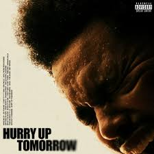

- Esto se va a tratar principalmente sobre el artist TheWeeknd y sus albums, poniendo un significado a sus obras y no tratando de vender solo musica, la compra de los albums son de origen externo
- Hurry Up Tomorrow 
El álbum "Hurry Up Tomorrow" de The Weeknd es una exploración profunda de la
transformación personal, el arrepentimiento y el anhelo de redención. El álbum profundiza en
temas existenciales y autorreferenciales, abordando la muerte, la redención y el renacimiento.
El álbum Dawn FM de The Weeknd trata sobre un viaje a través del purgatorio,
una emisora de radio ficticia que narra la transición del protagonista entre la vida y la
muerte. Con Jim Carrey como locutor, el álbum explora temas como la muerte, la alienación y las
relaciones complicadas.
El álbum "After Hours" de The Weeknd explora temas de desamor, arrepentimiento,
promiscuidad, exceso y el ciclo mental de una persona que ha pasado por una relación fallida. A
través de la música y la estética del álbum, The Weeknd narra la historia de un ciclo de dolor
que se repite con cada desamor.
El álbum Starboy toca temas de fama, materialismo y la transformación de un
artista en una superestrella. El título, "Starboy", simboliza una evolución desde una identidad
previa a una nueva, abrazando los desafíos y tentaciones que conlleva la fama. El álbum también
se enfoca en la extravagancia de la vida de celebridades, la jactancia, el romance y el
materialismo, aunque es un buen album, habla sobre temas que no son profundos, y habla mucho
sobre el ego de TheWeenkd.
El álbum House of Balloons de The Weeknd, en realidad un mixtape, explora temas
de amor, desamor, promiscuidad, y el consumo de drogas. También se centra en la atmósfera y el
ambiente, utilizando samples de otros artistas para crear un sonido único y personal.
.jfif)
.jfif)
.jfif)
.jfif)
{kind=link}
{kind=link}
{kind=link}
{kind=link}